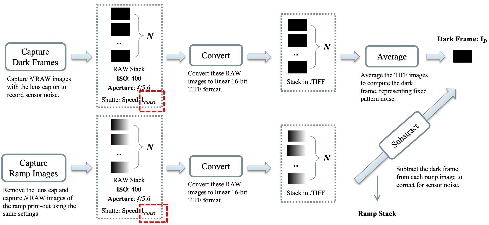

Summary
The project presents a robust High Dynamic Range (HDR) image processing pipeline that integrates image merging, white balance correction, and tone mapping to produce high-quality HDR images. Through extensive experimentation, the pipeline has been shown to effectively handle the complexities of HDR imaging, ensuring accurate color representation and preserving detail across a wide range of luminance levels. The proposed methodology also leverages linearization techniques for fine image stack for accurate radiometric calibration, and employs multiple white balance algorithms for consistent color representation, and utilizes the various tone mapping operators to adapt HDR images for standard display devices. The results demonstrate the pipeline’s capability to produce visually appealing and accurate HDR images, making it suitable for various applications in photography and imaging. Future work may explore the integration of advanced machine learning techniques to further enhance the performance and adaptability of the HDR processing pipeline.
Methodology
Pipeline Overview
To process HDR images, we use a pipeline of merging, white balance, and tonemapping. Merging combines LDR exposures into an HDR image, which tonemapping converts to SDR for display while preserving detail. JPG stacks require linearization, and RAW stacks are converted to .TIFF using tools like dcraw. White balance corrects color temperature, with optional adjustments for contrast, brightness, and saturation to optimize presentation.

Noise-optimal Weight
Noise-optimal weight utilizes a noise calibration procedure to enhance the fidelity of the HDR composite. The figure below illustrates the steps involved in capturing and processing ramp images, including dark frame subtraction and merging. This procedure ensures accurate adjustment for sensor noise, leveraging techniques such as dark frame averaging, ramp capture, and the use of calibrated weights. The final merged stack benefits from reduced artifacts and improved detail preservation.
Experiments
- Nikon D3200 camera: Static kitchen scene on a tripod captured by Ellen
- Camera Settings:
- Aperture: f/5.6
- ISO: 400
- Exposure Times: 1/3200, 1/2000, 1/1000, 1/640, 1/320, 1/160, 1/60, 1/30, 1/15, 1/8, 1/5, 1/2 seconds
- Conditions: Sunny weather, strong illumination
- Image Formats: RAW (NEF) and JPG
- # of Images: 12 images per stack
- Resolution: Width: 6016; Height: 4000
- Ground Truth: Generated using Photomatix software
Results & Discussion
The main results of this study showcase the effectiveness of the proposed HDR pipeline in generating high-quality images using both JPG and RAW stacks. The visualization below highlights the outcomes with different weighting schemes and merging types.

Visualization of HDR images from JPG stack using different weighting schemes and merging types.
Visualization of HDR images from RAW stack using different weighting schemes and merging types.
RGB tonemapping for JPG stack with different K and B values.
Illuminance tonemapping for JPG stack with different K and B values.
RGB tonemapping for RAW stack with different K and B values.
Illuminance tonemapping for RAW stack with different K and B values.
Comparison of different HDR imaging methods on RAW image stack: Traditional methods include Debevec, Robertson, and Mertens, while deep learning methods include DeepHDR and SCTNet. Note: For a more proper analysis, a fine image stack was used with the Robertson method.
Selected visualization for HDR results: (a) Debevec’s method with RGB tonemapping (K=0.1, B=0.8), (b) Debevec’s method with photographic tonemapping (key=0.08, L_white=100.0), (c) SCTNet after gray-world white balancing, (d) Mertens’s method, (e) Mertens’s method after gamma encoding, (f) Mertens’s method after gray-world white balancing.
References
[1] M. Azimi et al. Pu21: A novel perceptually uniform encod- ing for adapting existing quality metrics for hdr. In 2021 Picture Coding Symposium (PCS), pages 1–5. IEEE, 2021. 7[2] K. Barnard, L. Martin, A. Coath, and B. Funt. A comparison of computational color constancy algorithms. ii. experiments with image data. IEEE transactions on Image Processing, 11(9):985–996, 2002. 4
[3] P. E. Debevec and J. Malik. Recovering high dynamic range radiance maps from photographs. In Proceedings of the 24th Annual Conference on Computer Graphics and Inter- active Techniques, SIGGRAPH ’97, pages 369–378, New York, NY, USA, 1997. ACM Press/Addison-Wesley Publish- ing Co. 1, 2, 7, 8, 9, 11, 12
[4] F. Drago, K. Myszkowski, T. Annen, and N. Chiba. Adap- tive logarithmic mapping for displaying high contrast scenes. EUROGRAPHICS 2003 / P. Brunet and D. Fellner (Guest Editors), 22(3), 2003. 5
[5] R. Fattal, D. Lischinski, and M. Werman. Gradient domain high dynamic range compression. ACM Transactions on Graphics (TOG), 21(3):249–256, 2002. 2
[6] A. Gijsenij, T. Gevers, and J. van de Weijer. Computational color constancy: Survey and experiments. IEEE Transac- tions on Image Processing, 20(9):2475–2489, 2011. 2
[7] J. Hable. Uncharted 2: Hdr lighting. In Game Developers Conference, page 56, 2010. 5
[8] S. W. Hasinoff, F. Durand, and W. T. Freeman. Noise- optimal capture for high dynamic range photography. In 2010 IEEE Computer Society Conference on Computer Vi- sion and Pattern Recognition, pages 553–560. IEEE, 2010. 3, 6, 7
[9] S. D. Hordley. Scene illuminant estimation: Past, present, and future. Color Research & Application, 31(4):303–314, 2006. 2
[10] K.-J. Hu, T.-T. Chang, M.-Y. Lu, W.-J. Li, and J.-F. Huang. Bilateral filtering and adaptive tone-mapping for qualified edge and image enhancement. In Color Imaging XIV: Dis- playing, Processing, Hardcopy, and Applications, volume 7241, page 724112. SPIE, 2009. 5
[11] N. K. Kalantari, R. Ramamoorthi, et al. Deep high dynamic range imaging of dynamic scenes. ACM Trans. Graph., 36(4):144–1, 2017. 1, 6, 7
[12] K. Kirk and H. J. Andersen. Noise characterization of weighting schemes for combination of multiple exposures. In BMVC, volume 3, pages 1129–1138, 2006. 3, 4
[13] G. Krawczyk, K. Myszkowski, and H.-P. Seidel. Percep- tual effects in real-time tone mapping. In Proceedings of the ACM Symposium on Applied Perception in Graphics and Visualization, pages 195–202, New York, NY, USA, 2005. Association for Computing Machinery. 5
[14] E. Y. Lam. Combining gray world and retinex theory for au- tomatic white balance in digital photography. In Proceedings of the Ninth International Symposium on Consumer Elec- tronics, 2005.(ISCE 2005)., pages 134–139. IEEE, 2005. 4
[15] G. W. Larson, H. Rushmeier, and C. Piatko. A visibility matching tone reproduction operator for high dynamic range scenes. IEEE Transactions on Visualization and Computer Graphics, 3(4):291–306, 1997. 5
[16] T. Mertens, J. Kautz, and F. Van Reeth. Exposure fusion: A simple and practical alternative to high dynamic range pho- tography. Computer Graphics Forum, 26(1):394–401, 2007. 2
[17] T. Mertens, J. Kautz, and F. Van Reeth. Exposure fusion: A simple and practical alternative to high dynamic range pho- tography. In Computer graphics forum, volume 28, pages 161–171. Wiley Online Library, 2009. 1, 6, 7, 11, 12
[18] E. Reinhard, M. Stark, P. Shirley, and J. Ferwerda. Photo- graphic tone reproduction for digital images. In Proceed- ings of the 29th Annual Conference on Computer Graph- ics and Interactive Techniques, SIGGRAPH ’02, pages 267– 276, New York, NY, USA, 2002. ACM. 2, 4, 10
[19] E. Reinhard, G. Ward, S. Pattanaik, and P. Debevec. High Dynamic Range Imaging: Acquisition, Display, and Image- Based Lighting. Morgan Kaufmann, 2010. 2
[20] M. A. Robertson, S. Borman, and R. L. Stevenson. Dy- namic range improvement through multiple exposures. In Proceedings 1999 international conference on image pro- cessing (Cat. 99CH36348), volume 3, pages 159–163. IEEE, 1999. 1, 6, 7, 11
[21] S. Tel, Z. Wu, Y. Zhang, B. Heyrman, C. Demonceaux, R. Timofte, and D. Ginhac. Alignment-free hdr deghost- ing with semantics consistent transformer. arXiv preprint arXiv:2305.18135, 2023. 1, 6, 7, 12